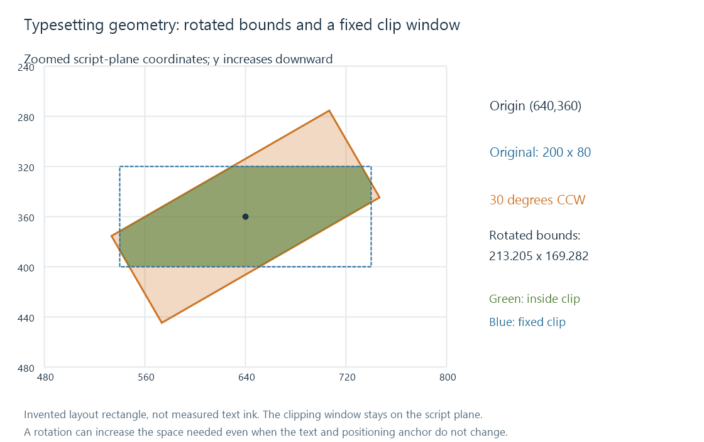

ASS typesetting
ASS typesetting coordinates font layout, anchors, layers, transforms, clipping and event timing to integrate subtitle text with a scene.
ASS typesetting uses styled events to place translations and other subtitle text where the scene calls for them. A translated shop sign can need a particular shape, position, rotation, outline and lifetime instead of the player's usual bottom caption box.
The task is to construct one coherent presentation from font metrics, geometry and time. Merely enlarging the subtitle or choosing a decorative face does not describe those relationships.
The sign starts with shaped text
The selected font and shaping produce glyphs, positions and advances. The advance width establishes how the line fits around an alignment anchor; the ink bounds describe the visible glyph outlines, including overhangs.
An outline or shadow can extend beyond the unadorned lettering. A typesetter therefore needs to account for the visible result when fitting text to a sign, rather than comparing only the sum of advances with the available width.
Fallback can alter that geometry. A replacement face with wider glyphs can wrap the text or protrude beyond the sign even when the event retains its original position commands.
For a readable translation, preserving meaning, avoiding a collision with other captions and keeping the line on screen for the relevant scene are also part of the typeset result.
Anchor and rotation origin have separate roles
This original override excerpt assumes a declared ASS style and 1280 × 720 script plane:
{\an5\pos(640,360)\org(640,360)\frz30}EXIT 10
The middle-centre alignment, \an5, makes (640,360) the line's positioning anchor. The explicit \org sets the same point as its rotation origin. Positive \frz30 rotates the presentation 30 degrees counterclockwise in the screen plane.
A different rotation origin would move the anchor itself around that other point as rotation is applied. It is not simply another spelling of the line's initial position.
The coordinates are script units. The renderer's mapping into the output surface then affects how they reach actual video pixels.
A rotation can enlarge the required rectangle
Take an invented 200 × 80 unrotated layout rectangle centred at (640,360). Its corners are (540,320), (740,320), (740,400) and (540,400).
With screen y increasing downward, a counterclockwise rotation by angle θ around this origin transforms relative offsets dx, dy as:
x' = 640 + dx cos(θ) + dy sin(θ)
y' = 360 − dx sin(θ) + dy cos(θ)
At 30 degrees, the rotated rectangle's axis-aligned extent becomes:
width = 200 cos(30°) + 80 sin(30°) ≈ 213.205
height = 200 sin(30°) + 80 cos(30°) ≈ 169.282
Its vertical extent is more than twice the original 80 units. A fixed box that fitted the original line does not automatically fit the rotated one.

This is a geometry model, not a measured bounding box for “EXIT 10” or an actual libass capture. It makes the transformation's space requirement visible.
A clip is a window on the script plane
Adding this rectangular clip:
\clip(540,320,740,400)
retains the portion inside that fixed script-plane rectangle. It does not enlarge to the new 213.205 × 169.282 rotated extent simply because the text rotated.
The clip and the text transform are different elements of the presentation. Their interaction can intentionally reveal text through a window or can accidentally cut off a rotated translation.
The rectangular coordinates use the format's integer script-coordinate model and eventual raster boundaries. A diagram's ideal floating-point corners do not imply subpixel precision for every clipping operation.
Vector clipping and drawing modes can describe more complex shapes. Their supported animation and scaling rules differ from a rectangular clip, so a typeset conversion must interpret the actual commands rather than reduce every shape to its bounding box.
Layers coordinate simultaneous events
A sign translation and a normal dialogue line can be active at the same time. ASS layers establish relative drawing order. Ordering does not in itself resolve a collision: the typesetter still needs suitable locations or a deliberate overlap.
An outline can keep light lettering readable on a changing background, while a shadow has another spatial effect. Treating them as the same single “border” property changes the presentation.
A plain text conversion can keep “EXIT 10” and its cue interval but omit the sign's transform, clip, layers and font choices. Keeping the event model with a compatible renderer or storing the rendered result into video preserves different properties.
The geometry has a lifetime in the scene
Position, motion and transforms belong to an event's active interval. A sign leaving the camera view can require the translation to leave with it. A cut can end the event even though the last line would otherwise remain readable.
Timed override parameters can use units different from event timestamps. A one-second motion window is relative to the event, while its start/end identify positions on the programme. Karaoke timing introduces another internal timing model.
For an Emby comparison of a typeset subtitle, inspect the delivered event model, the resources used and the stage doing the rendering. Matching the sentence and whole-event times establishes only part of the result; the geometry and its evolution determine whether the translated sign stays integrated with the scene.
See Also
- Advanced SubStation Alpha subtitles (ASS)
- Subtitle font fallback
- Subtitle font attachments
- Karaoke subtitle timing
- Subtitle rendering